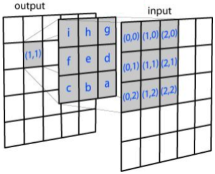

Predicting the Popularity of Instagram Photos
Correlating the content and style of Instagram photos with their popularities as measured by likes.
Abstract
We created a neural network to analyze Instagram photos to predict the popularity of the photo, as measured in likes. Our model was largely successful in these predictions, and its average error was 1700 likes or 27%.
Introduction
With the rise of social media, almost anybody can become famous. Some acquire their “fifteen minutes of fame” after saving the life of a kitten or a dog, some after being accepted to every Ivy League college, and some after yodeling Hank Williams’ “Lovesick Blues” in Walmart. Many people take to Instagram, a photo-sharing social media platform created in 2010. Users with especially large follower bases are often approached for advertisement or product endorsement, which quickly turns into well-paid work with little effort. As such, becoming an “Instagram celebrity” turns into a sort of game, where users attempt to post the kinds of photos and captions they expect others to want to see.
We wanted to develop a neural network that would be able to determine the popularity of a photo, simply by examining the photo. If such a network could be developed and accurately predict how many likes a photo would achieve, its usage could launch Instagram users into fame very easily. Beyond social media, photographers and cinematographers could potentially use this program to appeal to the eyes of the audience. Needless to say, such a program could have very powerful impacts on modern entertainment.
Collecting and Cleaning Data
In order to collect a varied, random, but non-biased dataset, we needed a large range of users who each had between 100,000 and 200,000 followers. The logic behind keeping followers as a constant variable was that more followers generally leads to more likes, regardless of photo content or quality. The range (100-200k followers) was chosen because we wanted to use profiles that had a substantial following, but profiles with 500 000+ followers are scarce.
With these parameters in mind, we generated a list of users. To start, we wrote a script to plug in all possible combinations of two letters (aa, ab, ac, ad, … zx, zy, zz) on Instagram’s suggestive search feature on their browser client. Each query returned 55 users, totalling 37,000 users. We kept only “public” profiles, users whose photos are available to the general public. After cleaning for public profiles, checking for 100k to 200k followers, and deleting duplicates, our final list contained 3600 users, We then used BeautifulSoup to scrape and save 12 photos from each account (for a total of 42000 photos), saving the number of likes into the metadata of each photo.
Most of the images were not the same size, so they were all resized to a consistent 640 by 640. (Many photos already had this resolution). We resized the smaller images simply by stretching them as opposed to padding them, since we thought our neural network would learn to ignore stretching but might recognize patterns in our padding.

Our Model
To map images to number of likes, we settled on using a convolutional network feeding into a fully connected layer. Many previous works in the past have demonstrated convolutional networks performing well in mapping image features to other parameters (including new images). To be exact, our network consisted of four identical convolutional layers which fed into a single, fully-connected layer. Using Tensorflow, we trained the network on 1000 images with batch size of 100, over 3000 epochs.
The loss between the images and their corresponding numbers of likes were minimized over the 3000 epochs, in hopes that the model could develop a mapping of the convolved images to the number of likes.
Results
Our program was quite accurate. The mean error was 1722 likes after 2600 epochs, and since the average number of likes for our 1000 photos was 6413, this was an error of 27% . Evidently, our model could make a good ballpark prediction for the number of likes on each photo.
Future Plans
With more time, we could have taken a number of steps to improve the accuracy of our model. First, we could simply have allowed it to train longer, since we were only able to run 3000 epochs over a period of 16 hours. Secondly, we could have trained our model with more images, since we were only able to use 1000 of the 42000 we had downloaded. We could also have developed a more sophisticated model by making our model multilayered. Lastly, we could have found images for Instagram models with more/fewer followers to see if their photos (and target audience) were different.